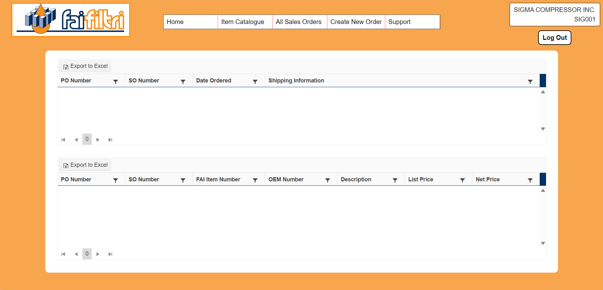
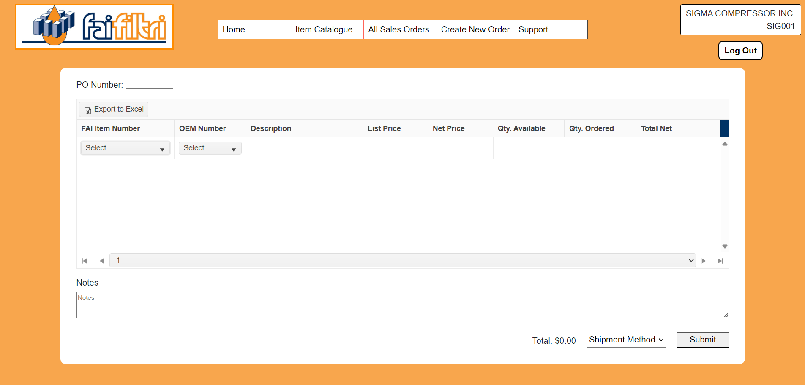

Wesley Renaud wrenaud@uoguelph.ca

For the filtration quality company, Fai Filtri, I was assigned to create a program where customers could log onto and create and submit their own orders. The web page also has pages to display the customer’s history of previous orders, and a list for all of the products that are sold at the company. The project opens up to a web page where the user may log into their account. From there they are met with a screen with options to view their past orders, see an item catalogue, and create a new order. The page for creating orders has a blank table/grid with a drop down on the first row for selecting items to add to the cart. When the customer selects one of the items from the menu, the current row is populated with the data of the product, including the quantity that is currently being ordered by the customer, which can be edited by the user. The drop down menu is shifted down to the next row and the process repeats. Once the customer is satisfied with their order, they can add a PO number, and submit the order, from which they’ll be prompted with selecting a shipment method.
This project introduced me to two new challenges. Firstly, because of how detailed the interface ended by becoming, and how many little things needed to be changed over time, several meetings were required between Armour and Fai which had me taking precise and detailed notes so that I had all of the changes that I needed to make including movement of columns in the table, minor changes of names in columns and various headings on the pages, and much more. The other challenge came with reading the data that I needed for the product and customer information. For much of the development of the project, all of the required information was being read from NAV, but as changes to the project were made, a lot of the data was being taken from different tables, making the amalgamation of it all slow and convoluted. In the end we changed to using a web service to collect the data more easily.
